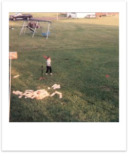
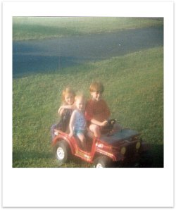
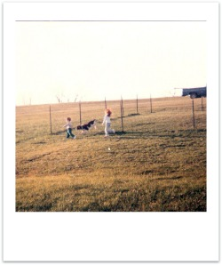
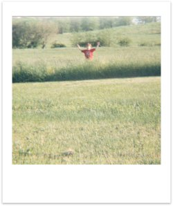

Memories of Stonehenge Drive
The house that I grew up in had two bedrooms, just one bathroom if I remember correctly, a small “office”, fairly small living room, dining room and kitchen, and we also had an unfinished basement. What I remember most about the house I was born in is the yard. We had probably close to an acre of land, which especially for a small child feels plenty large. In the front yard there were three huge rocks laid out in a circle that I remember playing on. I also remember that they made great seats for watching the fireworks on July 4th. Our backyard was larger than the front, and had kind of a unique layout. The yard was on a bit of an incline, but it was sort of leveled off into two or three large plateau's or steps, with rows of rocks at each step. We had a large porch that went into the backyard from the dining room at the highest level, and then a patio at the level below. I can remember playing under the porch, making little hideouts and forts. Up on the highest level we had a swingset, and then down closer to the patio we had a sandbox. I also recall that we had a basketball hoop put in by the driveway.
Thirty feet or so from the house we had a small grove of trees; I would guess there were about 30 or 40 of them. They were big and tall, fairly densely packed together, and many of them were perfect for climbing. Each of the kids had a tree claimed as “our” climbing tree. Beyond that was an open field that stretched out to the Virginia border. I remember thinking it quite cool that we lived on the border, and as I got older I would joke with my friends telling them that I could “hit a baseball into the next state.”
 One of our neighbors, the family living just to the west had a big dog named Sam that Taylee and I loved to go play with. We never owned a dog of our own while living in that home, but I absolutely loved dogs. We were separated by a fence, but we would just got and pet him through the fence, and we run back and forth next to the fence and have him chase us. Come to think of it I'm not sure how often, or even if ever we played with him from the same side of the fence, but I guess it worked just fine for me at the time.
 I've got so many memories of playing outside in that yard. I remember all the snow storms in the winter, getting all bundled up to go outside and play, building igloos and snowmen, have snowball fights, making snow angels. During the summer we'd play all day long; games on the swing-set, out in the grove of trees, soccer, volleyball, baseball, or football out in front or in the back. I remember setting up kiddie pools and running through sprinkler. All the classic things that most all of us did as kids. One of my favorite memories of playing at that house was after the sun went down during the summers, when hundreds and thousands of fireflies would be absolutely everywhere. I cant describe to you how exciting it was at the time to see all those flying, glowing lights. We'd run around catching as many as we could, and stick them all into a big mason jar to see how bright we could get it.
Continue to "Memories of Extended Family" >>